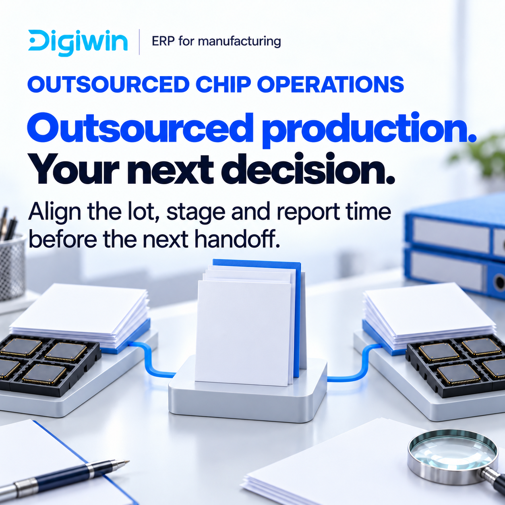
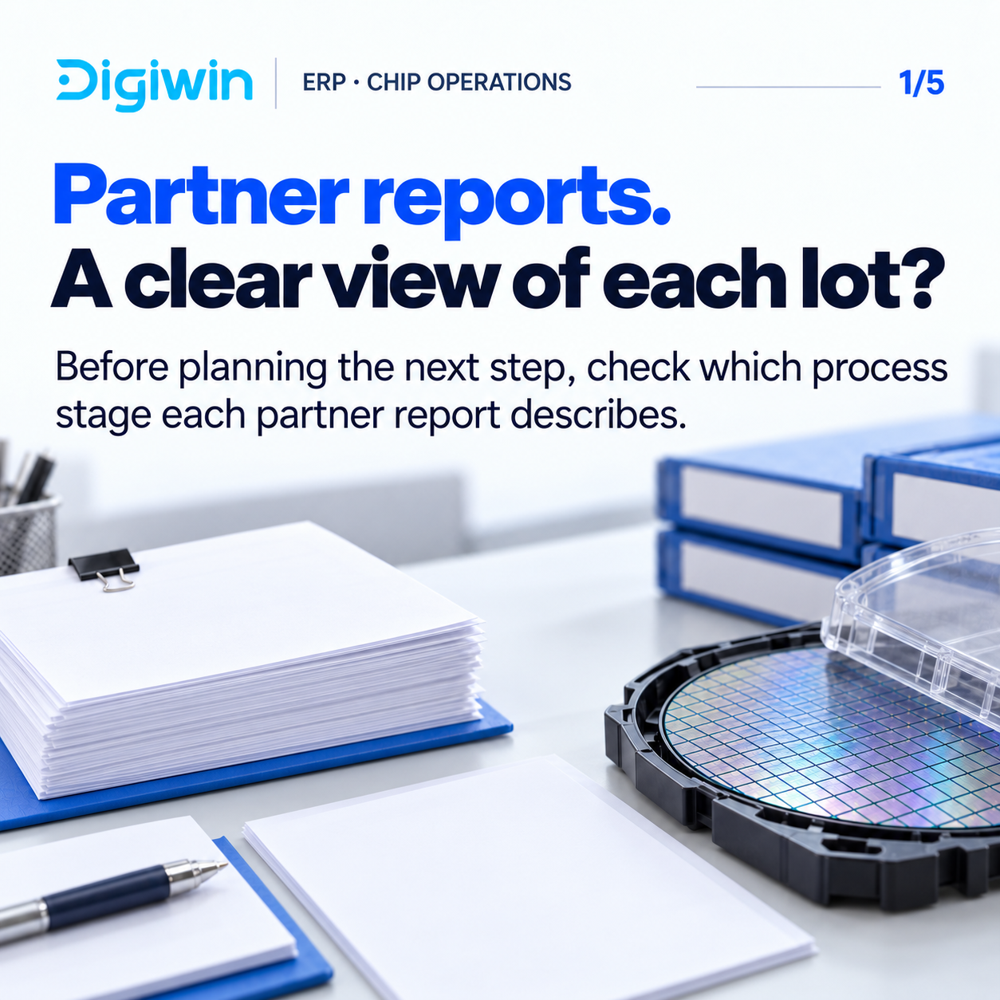
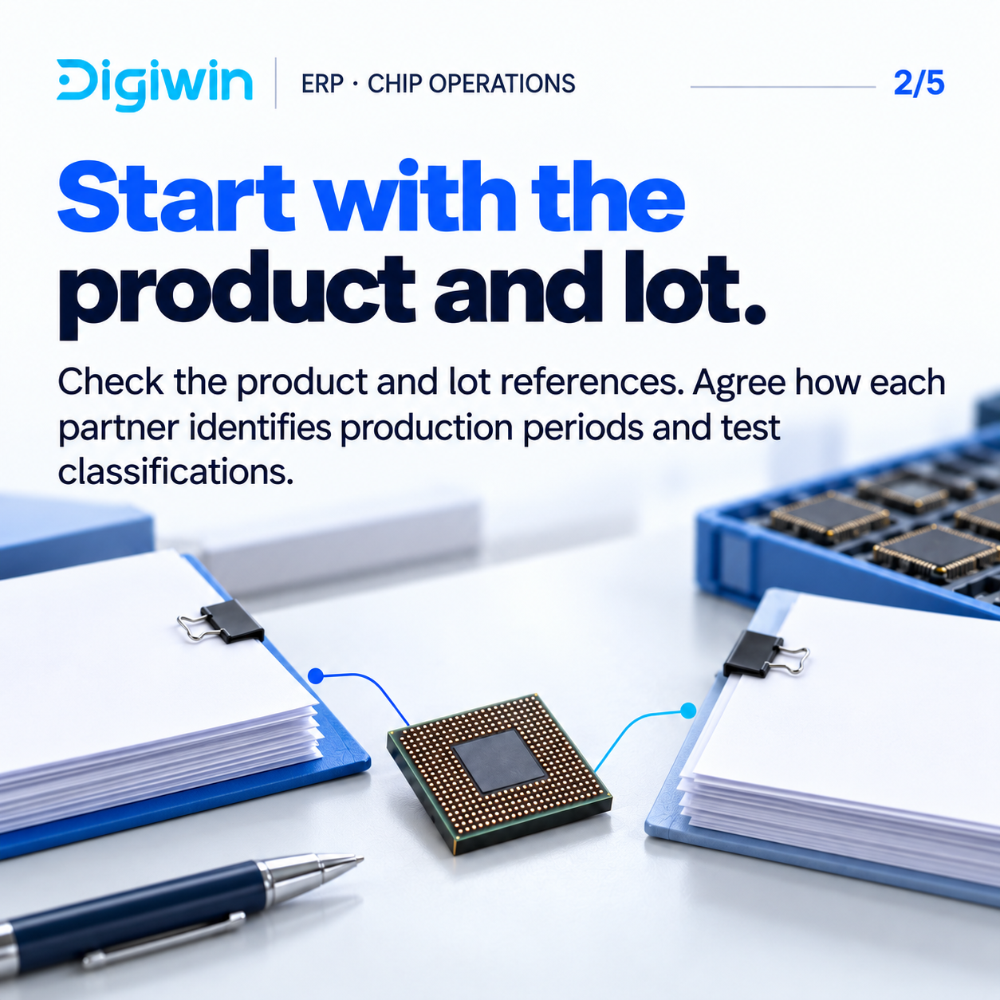
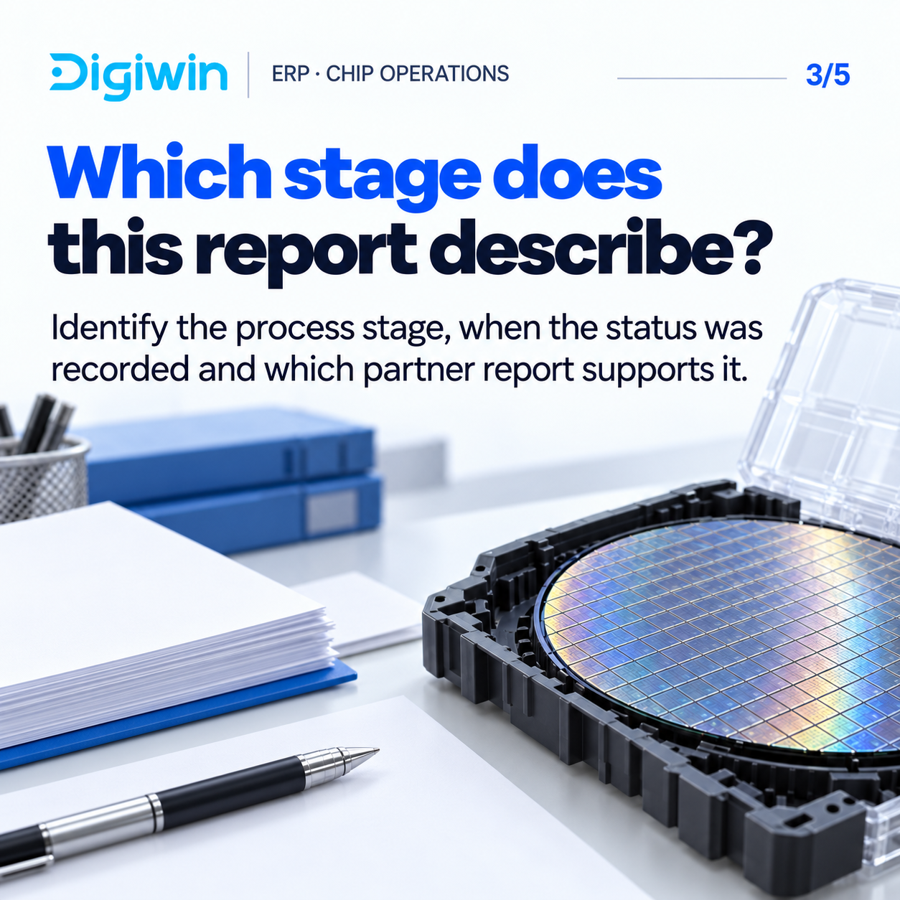
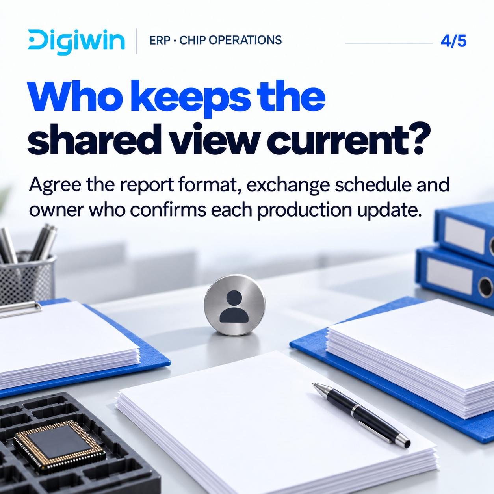
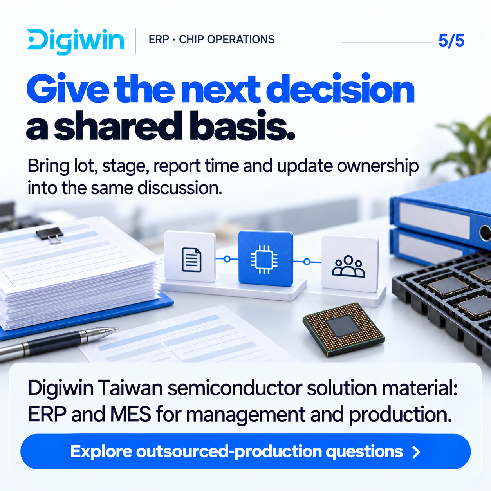
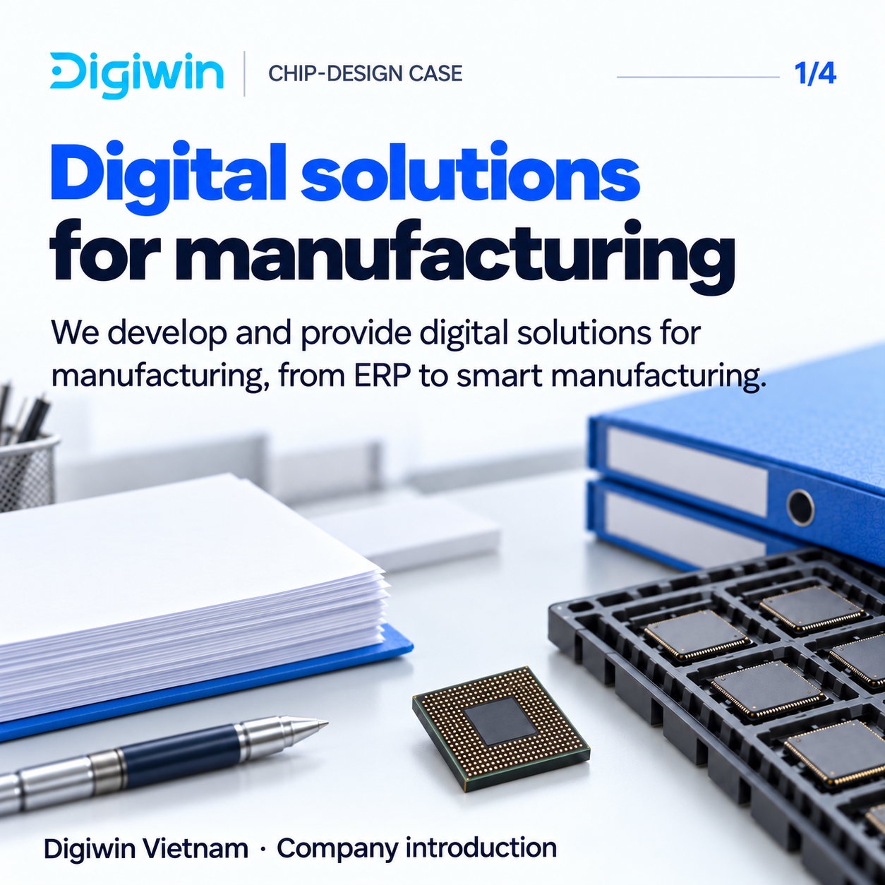
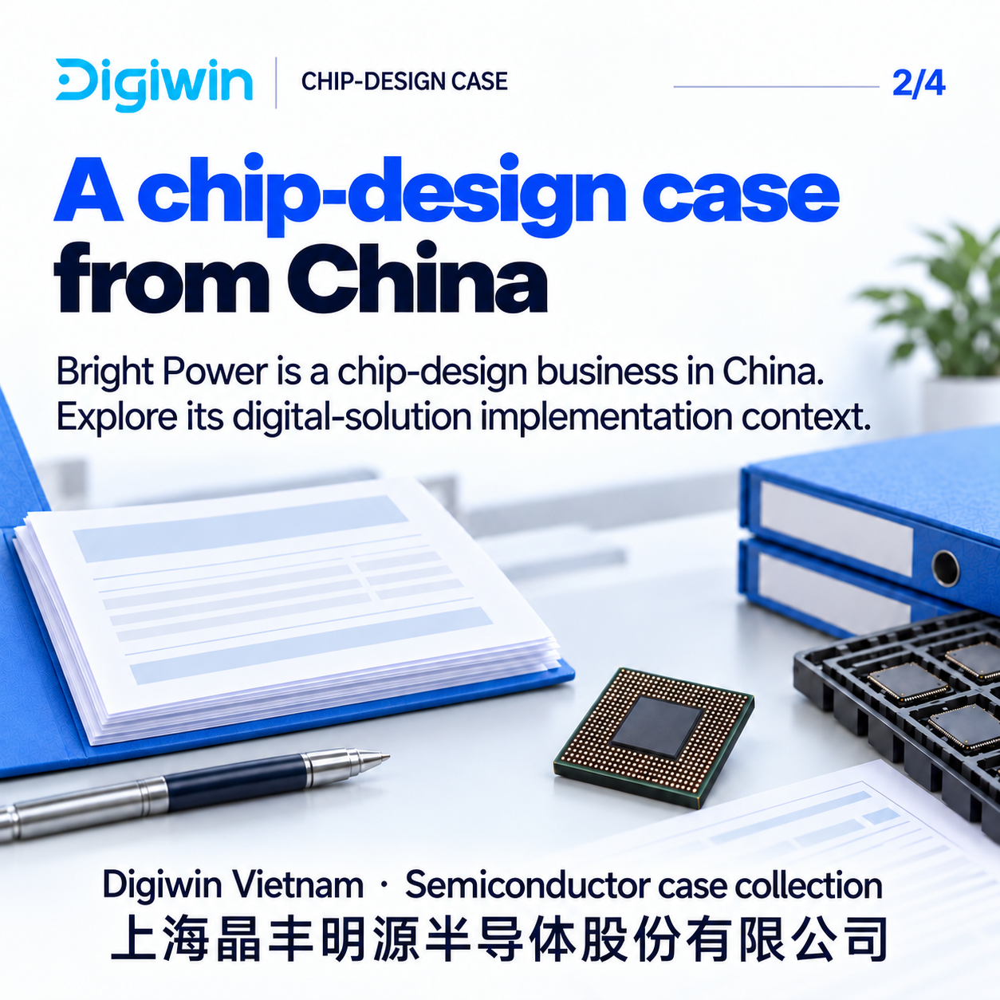

B13 · Actual8 artwork
Feed333px · review includes CHANGES_REQUIRED case1.
COLD-FABLESS-B13
We provide manufacturing ERP solutions. Chip-design operations teams using outsourced production: align partner reports before the next decision.

Outsourced production. Your next decision.
F1-A1
We provide manufacturing ERP solutions. Fabless (chip design without an owned fabrication plant) operations teams: align lot reports and responsibilities across production partners.

Partner reports. A clear view of each lot?
F1-A2
We provide manufacturing ERP solutions. Fabless (chip design without an owned fabrication plant) operations teams: align lot reports and responsibilities across production partners.

Start with the product and lot.
F1-A3
We provide manufacturing ERP solutions. Fabless (chip design without an owned fabrication plant) operations teams: align lot reports and responsibilities across production partners.

Which stage does this report describe?
F1-A4
We provide manufacturing ERP solutions. Fabless (chip design without an owned fabrication plant) operations teams: align lot reports and responsibilities across production partners.

Who keeps the shared view current?
F1-A5
We provide manufacturing ERP solutions. Fabless (chip design without an owned fabrication plant) operations teams: align lot reports and responsibilities across production partners.

Give the next decision a shared basis.
RMK-BRIGHT-1
We provide digital solutions for manufacturing. Explore outsourcing-management challenges in a named chip-design case from China.

Digital solutions for manufacturing
RMK-BRIGHT-2
We provide digital solutions for manufacturing. Explore outsourcing-management challenges in a named chip-design case from China.

A chip-design case from China